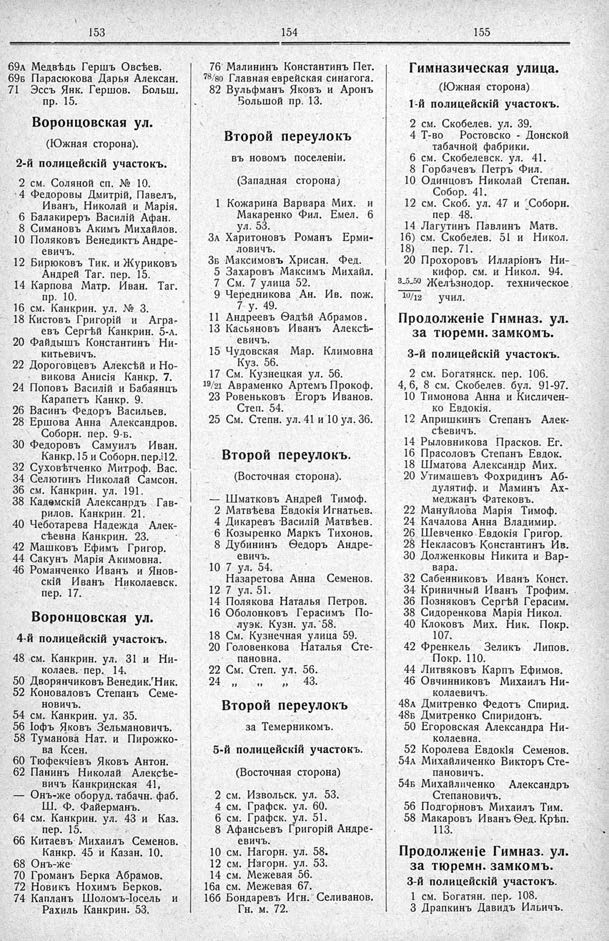

Лист источника 183
Скан

Распознанный текст
153
69а Медвѣдь Гершъ Овсѣев.
69б Парасюкова Дарья Алексан.
71 Эссъ Янк. Гершов. Больш.
пр. 15.
Воронцовская ул.
(Южная сторона).
2-й полицейскій участокъ.
2 см. Соляной сп. № 10.
4 Федоровы Дмитрій, Павелъ,
Иванъ, Николай и Марія.
6 Балакиревъ Василій Афан.
8 Симановъ Акимъ Михайлов.
10 Поляковъ Венедиктъ Андре-
евичъ.
12 Бирюковъ Тик. и Журиковъ
Андрей Таг. пер. 15.
14 Карпова Матр. Иван. Таг.
пр. 10.
16 см. Канкрин. ул. № 3.
18 Кистовъ Григорій и Агра-
евъ Сергѣй Канкрин. 5-а.
20 Файдышъ Константинъ Ни-
китьевичъ.
22 Дороговцевъ Алексѣй и Но-
викова Анисія Канкр. 7.
24 Поповъ Василій и Бабаянцъ
Карапетъ Канкр. 9.
26 Васинъ Федоръ Васильев.
28 Ершова Анна Александров.
Соборн. пер. 9-б.
30 Федоровъ Самуилъ Иван.
Канкр. 15 и Соборн. пер. 12.
32 Суховѣтченко Митроф. Вас.
34 Селютинъ Николай Самсон.
36 см. Канкрин. ул. 191.
38 Кадомскій Александръ Гав-
рилов. Канкрин. 21.
40 Чеботарева Надежда Алек-
сѣевна Канкрин. 23.
42 Машковъ Ефимъ Григор.
44 Сакунъ Марія Акимовна.
46 Романченко Иванъ и Янов-
скій Иванъ Николаевск.
пер. 17.
Воронцовская ул.
4-й полицейскій участокъ.
48 см. Канкрин. ул. 31 и Ни-
колаев. пер. 14.
50 Дворянчиковъ Венедик. Ник.
52 Коноваловъ Степанъ Семе-
новичъ.
54 см. Канкрин. ул. 35.
56 Іофъ Яковъ Зельмановичъ.
58 Туманова Нат. и Пирожко-
ва Ксен.
60 Тюфекчіевъ Яковъ Антон.
62 Панинъ Николай Алексѣе-
вичъ Канкринская 41.
— Онъ-же оборуд. табачн. фаб.
Ш. Ф. Файерманъ.
64 см. Канкрин. ул. 43 и Каз.
пер. 15.
66 Китаевъ Михаилъ Семенов.
Канкр. 45 и Казан. 10.
68 Онъ-же.
70 Громанъ Берка Абрамов.
72 Новикъ Нохимъ Берков.
74 Капланъ Шоломъ-Іосель и
Рахиль Канкрин. 53.
154
76 Малининъ Константинъ Пет.
78/80 Главная еврейская синагога.
82 Вульфманъ Яковъ и Аронъ
Большой пр. 13.
Второй переулокъ
въ новомъ поселеніи.
(Западная сторона)
1 Кожарина Варвара Мих. и
Макаренко Фил. Емел. 6
ул. 53.
3а Харитоновъ Романъ Ерми-
ловичъ.
3б Максимовъ Хрисан. Фед.
5 Захаровъ Максимъ Михайл.
7 См. 7 улица 52.
9 Чередникова Ан. Ив. пож.
7 у. 49.
11 Андреевъ Ѳадѣй Абрамов.
13 Касьяновъ Иванъ Алексѣ-
евичъ.
15 Чудовская Мар. Климовна
Куз. 56.
17 См. Кузнецкая ул. 56.
19/21 Авраменко Артемъ Прокоф.
23 Ровеньковъ Егоръ Иванов.
Степ. 54.
25 См. Степн. ул. 41 и 10 ул. 36.
Второй переулокъ.
(Восточная сторона).
— Шматковъ Андрей Тимоф.
2 Матвѣева Евдокія Игнатьев.
4 Дикаревъ Василій Матвѣев.
6 Козыренко Маркъ Тихонов.
8 Дубининъ Ѳедоръ Андре-
евичъ.
10 7 ул. 54.
Назаретова Анна Семенов.
12 7 ул. 51.
14 Полякова Наталья Петров.
16 Оболонковъ Герасимъ По-
луэк. Кузн. ул. 58.
18 См. Кузнечная улица 59.
20 Головенкова Наталья Сте-
пановна.
22 См. Степ. ул. 56.
24 „ „ „ 43.
Второй переулокъ
за Темерникомъ.
5-й полицейскій участокъ.
(Восточная сторона)
2 см. Извольск. ул. 53.
4 см. Графск. ул. 60.
6 см. Графск. ул. 51.
8 Афансьевъ Григорій Андре-
евичъ.
10 см. Нагорн. ул. 58.
12 см. Нагорн. ул. 53.
14 см. Межевая 56.
16а см. Межевая 67.
16б Бондаревъ Игн. Селиванов.
Гн. м. 72.
155
Гимназическая улица.
(Южная сторона)
1-й полицейскій участокъ.
2 см. Скобелев. ул. 39.
4 Т-во Ростовско - Донской
табачной фабрики.
6 см. Скобелевск. ул. 41.
8 Горбачевъ Петръ Фил.
10 Одинцовъ Николай Степан.
Собор. 41.
12 см. Скоб. ул. 47 и Соборн.
пер. 48.
14 Лагутинъ Павлинъ Матв.
16) см. Скобелев. 51 и Никол.
18) пер. 71.
20 Прохоровъ Илларіонъ Ни-
кифор. см. и Никол. 94.
3_5_50 Желѣзнодор. техническое
10/12 учил.
Продолженіе Гимназ. ул.
за тюремн. замкомъ.
3-й полицейскій участокъ.
2 см. Богатянск. пер. 106.
4, 6, 8 см. Скобелев. бул. 91-97.
10 Тимонова Анна и Кисличен-
ко Евдокія.
12 Апришкинъ Степанъ Алек-
сѣевичъ.
14 Рыловникова Прасков. Ег.
16 Прасоловъ Степанъ Евдок.
18 Шматова Александр Мих.
20 Утимашевъ Фохридинъ Аб-
дулятиф. и Маминъ Ах-
меджанъ Фатековъ.
22 Мануйлова Марія Тимоф.
24 Качалова Анна Владимир.
26 Шевченко Евдокія Григор.
28 Некласовъ Константинъ Ив.
30 Долженковы Никита и Вар-
вара.
32 Сабенниковъ Иванъ Конст.
34 Криничный Иванъ Трофим.
36 Позняковъ Сергѣй Герасим.
38 Сидоренкова Марія Никол.
40 Клоковъ Мих. Ник. Покр.
107.
42 Френкель Зеликъ Липов.
Покр. 110.
44 Литвяковъ Карпъ Ефимов.
46 Овчинниковъ Михаилъ Ни-
колаевичъ.
48а Дмитренко Федотъ Спирид.
48б Дмитренко Спиридонъ.
50 Егоровская Александра Ни-
колаевна.
52 Королева Евдокія Семенов.
54а Михайличенко Викторъ Сте-
пановичъ.
54б Михайличенко Александръ
Степановичъ.
56 Подгорновъ Михаилъ Тим.
58 Макаровъ Иванъ Ѳед. Крѣп.
113.
Продолженіе Гимназ. ул.
за тюремн. замкомъ.
3-й полицейскій участокъ.
1 см. Богатян. пер. 108.
3 Драпкинъ Давидъ Ильичъ.